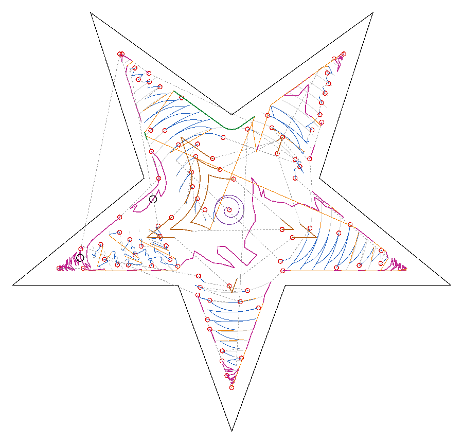
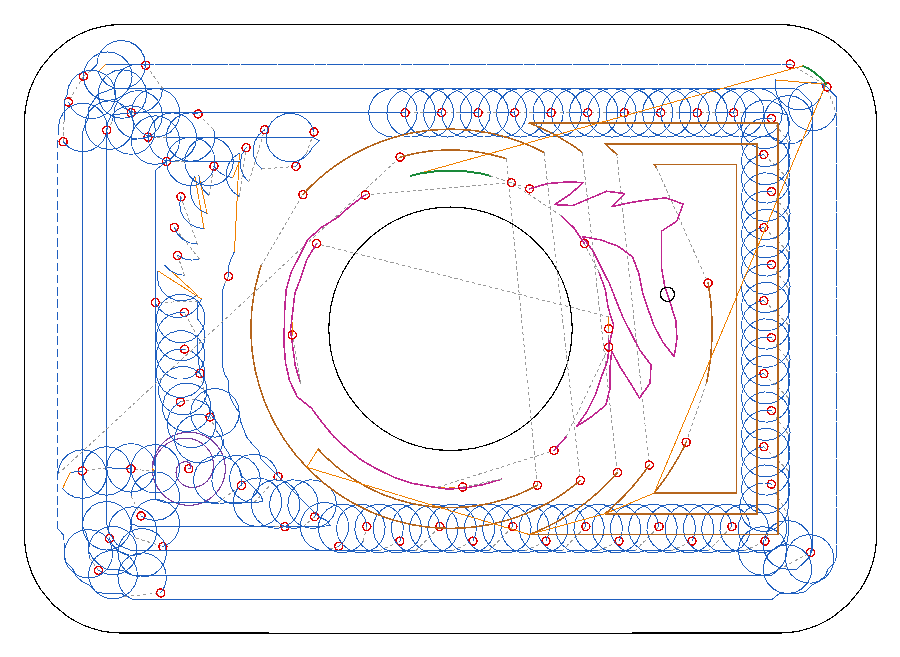
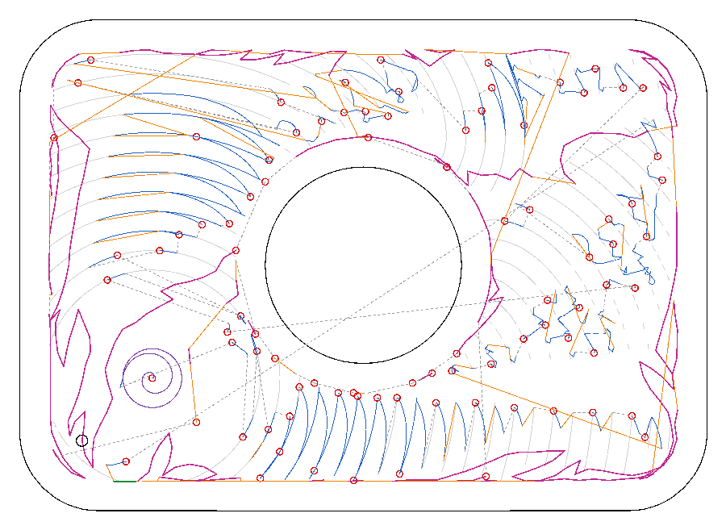
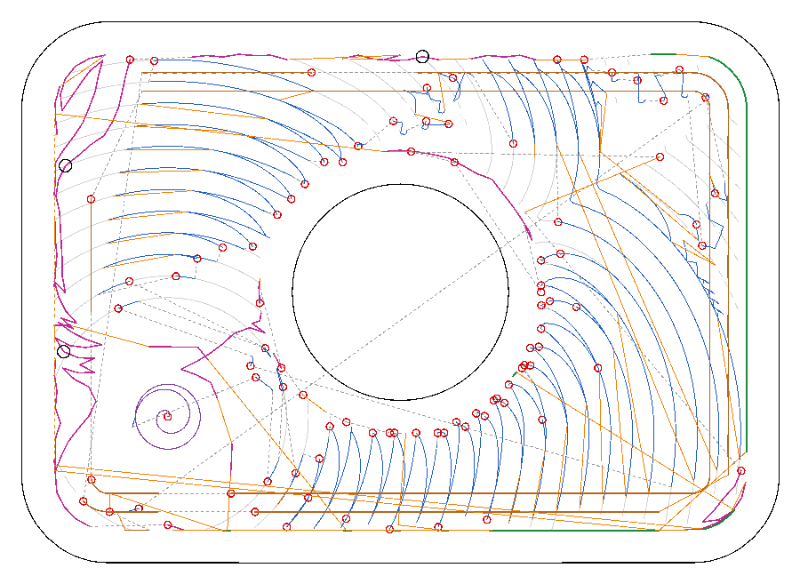

Same shapes, same tool, stepover and ceiling. The harness now draws each producer in its own colour (wraps, wall pass, residue passes, links, entries) and writes the PNG itself. Columns 3–5 are candidate (a): as rendered at G1, with every G1 fix, and with the fixes but the old meeting-line rule. Counts are information, not a ranking. Over-steps list position and producer now.
Agent

star / agent
pieces: 1
cut length: 1379.2 mm
keep-down links: 261 (596.2 mm)
entries (plunges): 25
retracts (lifts to safe Z, last included): 25
pass load (planner readout): max 0.4515 vs ceiling 0.3626; 1 of 1943 steps over; 0 exempt plunge-departure steps
over: clearing cut (segment 85) from (83.47, 40.11) to (83.35, 38.62), reading 0.4515
ContourSpiral

star / contour_spiral
pieces: 1
cut length: 2850.6 mm
keep-down links: 25 (141.2 mm)
entries (plunges): 101
retracts (lifts to safe Z, last included): 101
pass load (planner readout): max 0.3613 vs ceiling 0.3626; 0 of 4498 steps over; 0 exempt plunge-departure steps
(a) as at G1

star / geodesic_g1
pieces: 1
cut length: 1010.9 mm
keep-down links: 66 (206.1 mm)
entries (plunges): 86
retracts (lifts to safe Z, last included): 86
pass load (planner readout): max 0.3614 vs ceiling 0.3626; 0 of 2559 steps over; 0 exempt plunge-departure steps
field piece 0: applied true, seed Some([49.5, 50.5]), seed radius 3.00 mm, levels 18, wrap pieces 103, converged true, front branches 1, spiral levels 0
(a) with the G1 fixes

star / geodesic_a
pieces: 1
cut length: 993.2 mm
keep-down links: 125 (283.9 mm)
entries (plunges): 87
retracts (lifts to safe Z, last included): 87
pass load (planner readout): max 0.4468 vs ceiling 0.3626; 2 of 2537 steps over; 0 exempt plunge-departure steps
over: residue mop cut (segment 188) from (34.30, 53.26) to (33.83, 52.68), reading 0.3661
over: residue mop cut (segment 193) from (19.22, 39.99) to (18.89, 40.66), reading 0.4468
field piece 0: applied true, seed Some([49.5, 50.5]), seed radius 3.00 mm, levels 18, wrap pieces 92, converged true, front branches 1, spiral levels 6
(a) fixes, old meeting rule

star / geodesic_a_through
pieces: 1
cut length: 993.2 mm
keep-down links: 125 (283.9 mm)
entries (plunges): 87
retracts (lifts to safe Z, last included): 87
pass load (planner readout): max 0.4468 vs ceiling 0.3626; 2 of 2537 steps over; 0 exempt plunge-departure steps
over: residue mop cut (segment 188) from (34.30, 53.26) to (33.83, 52.68), reading 0.3661
over: residue mop cut (segment 193) from (19.22, 39.99) to (18.89, 40.66), reading 0.4468
field piece 0: applied true, seed Some([49.5, 50.5]), seed radius 3.00 mm, levels 18, wrap pieces 92, converged true, front branches 1, spiral levels 6
Agent

pocket / agent
pieces: 1
cut length: 1471.0 mm
keep-down links: 374 (496.1 mm)
entries (plunges): 31
retracts (lifts to safe Z, last included): 31
pass load (planner readout): max 0.3618 vs ceiling 0.3626; 0 of 2024 steps over; 0 exempt plunge-departure steps
ContourSpiral

pocket / contour_spiral
pieces: 1
cut length: 2630.0 mm
keep-down links: 22 (137.3 mm)
entries (plunges): 91
retracts (lifts to safe Z, last included): 91
pass load (planner readout): max 0.3723 vs ceiling 0.3626; 1 of 4282 steps over; 0 exempt plunge-departure steps
over: residue mop cut (segment 205) from (57.59, 33.55) to (57.82, 32.83), reading 0.3723
(a) as at G1

pocket / geodesic_g1
pieces: 1
cut length: 1237.8 mm
keep-down links: 133 (315.5 mm)
entries (plunges): 89
retracts (lifts to safe Z, last included): 89
pass load (planner readout): max 0.4478 vs ceiling 0.3626; 1 of 2891 steps over; 0 exempt plunge-departure steps
over: residue mop cut (segment 168) from (54.44, 28.13) to (55.00, 28.64), reading 0.4478
field piece 0: applied true, seed Some([18.5, 18.5]), seed radius 3.00 mm, levels 32, wrap pieces 88, converged true, front branches 1, spiral levels 0
(a) with the G1 fixes

pocket / geodesic_a
pieces: 1
cut length: 1077.6 mm
keep-down links: 181 (437.9 mm)
entries (plunges): 89
retracts (lifts to safe Z, last included): 89
pass load (planner readout): max 0.4484 vs ceiling 0.3626; 1 of 3241 steps over; 0 exempt plunge-departure steps
over: residue mop cut (segment 353) from (11.50, 11.40) to (11.34, 12.13), reading 0.4484
field piece 0: applied true, seed Some([18.5, 18.5]), seed radius 3.00 mm, levels 31, wrap pieces 158, converged true, front branches 3, spiral levels 3
(a) fixes, old meeting rule

pocket / geodesic_a_through
pieces: 1
cut length: 1490.1 mm
keep-down links: 150 (669.5 mm)
entries (plunges): 92
retracts (lifts to safe Z, last included): 92
pass load (planner readout): max 0.4743 vs ceiling 0.3626; 3 of 4825 steps over; 0 exempt plunge-departure steps
over: residue mop cut (segment 251) from (42.76, 51.64) to (42.03, 51.77), reading 0.4511
over: residue mop cut (segment 260) from (9.63, 42.16) to (9.04, 41.70), reading 0.4743
over: residue mop cut (segment 260) from (8.48, 25.15) to (8.87, 24.51), reading 0.4595
field piece 0: applied true, seed Some([18.5, 18.5]), seed radius 3.00 mm, levels 31, wrap pieces 83, converged true, front branches 3, spiral levels 3